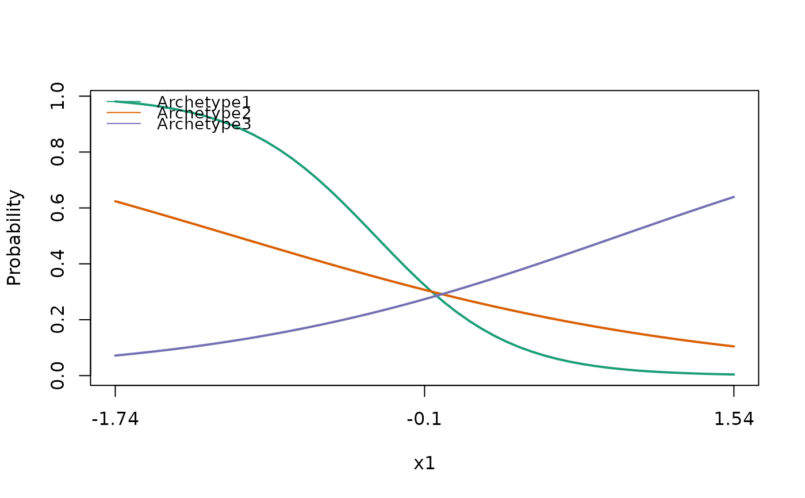

plot.species_mix_effects_data
# S3 method for species_mix_effects_data plot( x, object, object2 = NULL, nboot = 0, type = "response", response.var = NULL, CI = c(0.025, 0.975), linecols = c("#1B9E77", "#D95F02", "#7570B3", "#E7298A", "#66A61E", "#E6AB02", "#A6761D", "#666666"), polycols = "#00000020", ylim = NULL, ... )
| x | a list of partial prediction data frames as generated by effects_data |
|---|---|
| object | A fitted species_mix model. |
| object2 | A species_mix.bootsrap object. Default is NULL, no standard errors will be reported. |
| nboot | An option to do bootstrapping when plotting, this will be slow, better to run and save bootstrap object and pass to plotting function as object2. |
| type | The type of prediction. Default is 'response' alternative is 'link'. |
| response.var | What response variable to plot on the y-axis. Default is all Archetypes. Other options are a subset of Archetypes, names "Archetype1". Or species can be plotted, "Species" will plot all species predictions in the model. "SpeciesSum" with sum all species predictions on the y-axis, for a binomial model this will represent species richness. For other models, it will be the sum of the species specific responses. Finally, individual species can be plotted using the species name in the original response data. |
| CI | is the confidence intervals for the stand errors. |
| linecols | Are the default colours for plotting the partial responses. |
| polycols | Is the colour of the confidence intervals in the response plots. |
| ylim | Default is NULL and will plot ylim within range of the response variable. |
| \dots | Extra plotting arguments. |
Plots the partial dependence plots (marginal response curves) for focal covariates. Continuous covariates will be plotted as lines, factors will be plotted as dotplots.
# \donttest{ library(ecomix) set.seed(42) sam_form <- stats::as.formula(paste0('cbind(',paste(paste0('spp',1:20), collapse = ','),")~x1+z1")) sp_form <- ~ 1 beta <- matrix(c(-2.9,-3.6,-0.9,1,.9,1.9),3,2,byrow=TRUE) dat <- data.frame(y=rep(1,100),x1=stats::runif(100,0,2.5), z1=stats::rnorm(100,0,2.5)) dat[,-1] <- scale(dat[,-1]) simulated_data <- species_mix.simulate(archetype_formula = sam_form,species_formula = sp_form, data = dat,beta=beta,family="bernoulli")#>fm1 <- species_mix(archetype_formula = sam_form,species_formula = sp_form, data = simulated_data, family = 'bernoulli', nArchetypes=3)#>#>#>#>#>#>#>#>#>#>#>#>#>#>#>#> initial value 819.837517 #> iter 10 value 819.706573 #> final value 819.703416 #> converged# }